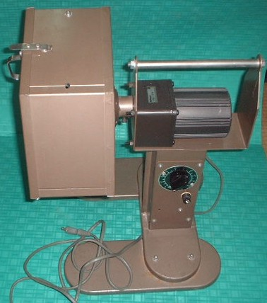
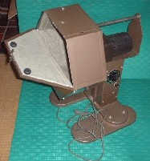

Tile colection 珍奇牌。
（２０）パイスター
今日は趣向をかえて、ちょっと変わった代物。これは牌の洗浄機で商品名はパイスター。左側のドラムの中に牌を入れ、スイッチを入れるとドラムが回転する。するとドラムの中で牌も回転して洗浄されるという仕掛けである。
洗浄されると云っても、洗濯機みたいに水が出てくるわけではない。ドラムの中でガラガラとかき回されるだけ。ドラムは鉄板なので、そのまま回転させたのでは、牌が内壁に打ち当たって損傷するおそれがある。そこでドラムの内側はフェルトでカバーしてある。
こういう商品を雀荘が購入したとしても、営業が終わってから、店員によって使用される。要は一般のお客には縁のない商品。そんなこともあって、いつ頃、販売された商品なのかよく分からない（昭和５０年代くらいの商品では、と思うが）。
いずれにしても雀荘が重宝した商品であれば、かなり出回る筈。しかしσ(-_-)の認識不足かも知れないが、そんな様子もないようだ。ということはアイデア倒れであまり売れず、世の中から消えてしまった商品かも知れない。やっぱり牌磨きは手作業が一番いいのかな？。